<!DOCTYPE html>
<html lang="en">
<head>
<meta charset="UTF-8">
<meta name="viewport" content="width=device-width,initial-scale=1">
<title>Figure it Out — Quadrilaterals</title>
<meta name="description" content="Class 8 Mathematics · Part 1 · Quadrilaterals · Figure it Out">
<link rel="icon" href="data:image/svg+xml,<svg xmlns='http://www.w3.org/2000/svg' viewBox='0 0 100 100'><text y='.9em' font-size='90'>📘</text></svg>">
<link rel="stylesheet" href="../../../assets/book.css">
<link rel="stylesheet" href="https://cdn.jsdelivr.net/npm/katex@0.16.11/dist/katex.min.css" crossorigin="anonymous">
</head>
<body>
<header class="topbar">
<div class="topbar-in">
  <div class="crumb">
    <span class="c1"><a href="../../../index.html">Library</a> · <a href="../../index.html">Class 8 Mathematics · Part 1</a></span>
    <span class="c2">Quadrilaterals · Figure it Out</span>
  </div>
  <a class="tb-btn" data-nav="prev" href="../../04-quadrilaterals/19-figure-it-out/index.html" title="Figure it Out">←</a>
  <details class="drawer"><summary class="tb-btn" title="Sections in this chapter">☰</summary>
<div class="drawer-panel"><div class="dh">Quadrilaterals</div><a href="../01-chapter-opener/index.html">Chapter opener</a><a href="../02-rectangles-and-squares-4.1/index.html">4.1 Rectangles and Squares</a><a href="../03-a-carpenter-s-problem/index.html">A Carpenter’s Problem</a><a href="../04-the-process-of-finding-properties/index.html">The Process of Finding Properties</a><a href="../05-a-special-rectangle/index.html">A Special Rectangle</a><a href="../06-properties-of-a-square/index.html">Properties of a Square</a><a href="../07-figure-it-out/index.html">Figure it Out</a><a href="../08-angles-in-a-quadrilateral-4.2/index.html">4.2 Angles in a Quadrilateral</a><a href="../09-more-quadrilaterals-with-parallel-opposite-sides-4.3/index.html">4.3 More Quadrilaterals with Parallel Opposite Sides</a><a href="../10-quadrilaterals-with-equal-sidelengths-4.4/index.html">4.4 Quadrilaterals with Equal Sidelengths</a><a href="../11-figure-it-out/index.html">Figure it Out</a><a href="../12-playing-with-quadrilaterals-4.5/index.html">4.5 Playing with Quadrilaterals; Geoboard Activity</a><a href="../13-joining-triangles/index.html">Joining Triangles</a><a href="../14-kite-and-trapezium-4.6/index.html">4.6 Kite and Trapezium; Kite</a><a href="../15-trapezium/index.html">Trapezium</a><a href="../16-figure-it-out/index.html">Figure it Out</a><a href="../17-summary/index.html">SUMMARY</a><a href="../18-figure-it-out/index.html">Figure it Out</a><a href="../19-figure-it-out/index.html">Figure it Out</a><a href="../20-figure-it-out/index.html" aria-current="page">Figure it Out</a></div></details>
  <a class="tb-btn" data-nav="next" href="../../05-number-play/01-is-this-a-multiple-of-5.1/index.html" title="5.1 Is This a Multiple Of?; Sum of Consecutive Numbers">→</a>
  <button class="tb-btn" data-theme-toggle title="Toggle light / dark" aria-label="Toggle light or dark theme">◐</button>
</div>
<div class="progress"><span style="width:61.9%"></span></div>
</header>
<main class="wrap">
<div class="sec-head">
  <p class="eyebrow"><a href="../index.html">Chapter 4 · Quadrilaterals</a></p>
  <h1>Figure it Out</h1>
  <p class="sec-meta">Textbook pages 34–39 · 16 figures</p>
</div>
<article class="prose">
<ul class="qlist">
<li><span class="mk">1.</span><span class="lt">Find all the sides and the angles of the quadrilateral obtained by</span></li>
</ul>
<p>joining two equilateral triangles with sides 4 cm.</p>
<p>Ans. Each angle of equilateral triangle is \(60 ^{\circ}\) . Refer the diagram.</p>
<figure class="fig">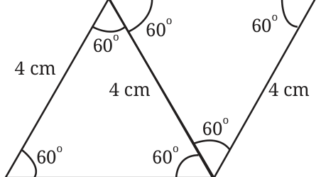</figure>
<ul class="qlist">
<li><span class="mk">2.</span><span class="lt">Construct a kite whose diagonals are of lengths 6 cm and 8 cm.</span></li>
</ul>
<p>Ans. Diagonals of Kite is perpendicular to each other. Draw a line segment \(PQ = 6\) cm. Draw a perpendicular bisector of PQ. Suppose it cuts PQ at T. Join PR, RQ, QS and PS such that \(RS = 8\) cm. Now PRQS is the required Kite.</p>
<figure class="fig side-fig">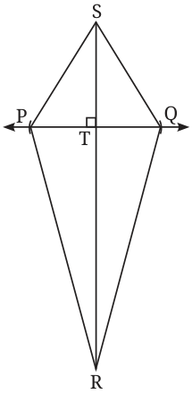</figure>
<ul class="qlist">
<li><span class="mk">3.</span><span class="lt">Find the remaining angles in the following trapeziums -</span></li>
</ul>
<figure class="fig side-fig">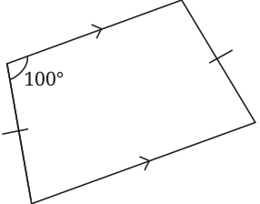</figure>
<figure class="fig">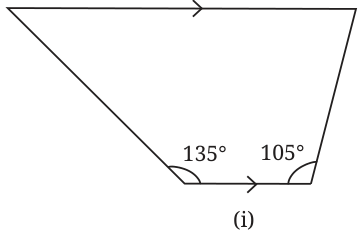</figure>
<figure class="fig side-fig">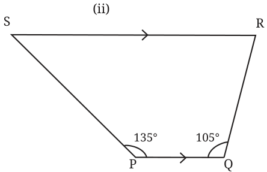</figure>
<p>Ans. (i) In trapezium, PQ||RS</p>
<div class="mathblock"><p>\(\angle R = 75 ^{\circ}\) . So, \(\angle S = 45 ^{\circ}\)</p></div>
<ul class="qlist">
<li><span class="mk">(ii)</span><span class="lt">In trapezium ABCD given \(AD = BC\)</span></li>
</ul>
<div class="mathblock"><p>Then \(\angle A = 80 ^{\circ}\)</p></div>
<p>Since \(AD = BC\). So trapezium ABCD is an isosceles trapezium. Thus \(\angle B = \angle A = 80 ^{\circ}\)</p>
<figure class="fig">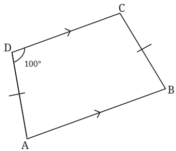</figure>
<ul class="qlist">
<li><span class="mk">4.</span><span class="lt">Draw a Venn diagram showing the set of parallelograms, kites,</span></li>
</ul>
<p>rhombuses, rectangles, and squares. Then, answer the following questions -</p>
<ul class="qlist">
<li><span class="mk">(i)</span><span class="lt">What is the quadrilateral that is both a kite and a</span></li>
</ul>
<p>parallelogram?</p>
<ul class="qlist">
<li><span class="mk">(ii)</span><span class="lt">Can there be a quadrilateral that is both a kite and a rectangle?</span></li>
<li><span class="mk">(iii)</span><span class="lt">Is every kite a rhombus? If not, what is the correct relationship</span></li>
</ul>
<p>between these two types of quadrilaterals?</p>
<p>Ans.</p>
<p>Square</p>
<figure class="fig">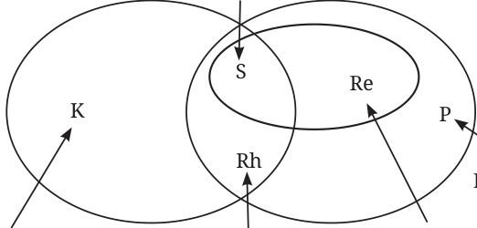</figure>
<aside class="sidenote"><p>Parallelogram</p></aside>
<ul class="qlist">
<li><span class="mk">(i)</span><span class="lt">Rhombus and Square.</span></li>
<li><span class="mk">(ii)</span><span class="lt">No</span></li>
<li><span class="mk">(iii)</span><span class="lt">No.</span></li>
</ul>
<p>A rhombus is a kite whereas a kite need not be a rhombus.</p>
<ul class="qlist">
<li><span class="mk">5.</span><span class="lt">If PAIR and RODS are two rectangles, find \(\angle IOD\).</span></li>
</ul>
<figure class="fig">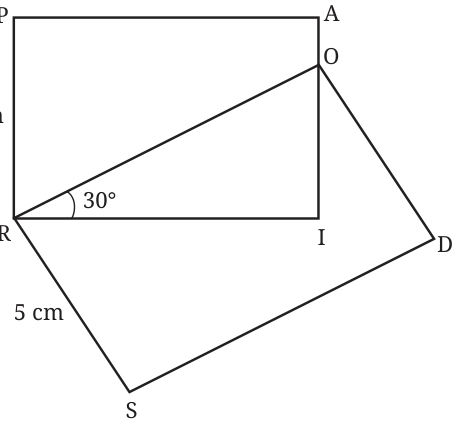</figure>
<p>Ans. \(\angle IOD = 30 ^{\circ}\)</p>
<ul class="qlist">
<li><span class="mk">6.</span><span class="lt">Construct a square with diagonal 6 cm without using a protractor.</span></li>
</ul>
<p>Ans. Draw a line segment \(AB = 6\) cm. Now using a compass, draw a line perpendicular to through its mid-point. Take points C &amp; D on this line from O, such that OC</p>
<figure class="fig">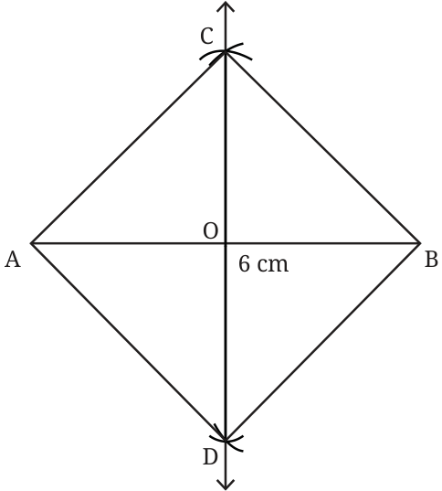</figure>
<div class="mathblock"><p>\(= OD = 3\) cm Join, AC, BC,</p></div>
<p>BD &amp; AD. ACBD is the required square.</p>
<ul class="qlist">
<li><span class="mk">7.</span><span class="lt">CASE is a square. The</span></li>
</ul>
<p>points U, V, W and X are the midpoints of the sides of the square. What type of quadrilateral is UVWX? Find this by using geometric reasoning, as well as by construction and measurement. Find other ways of constructing a square within</p>
<p>a square such that the vertices of the inner square lie on the sides of the outer square, as shown in Figure (b).</p>
<figure class="fig">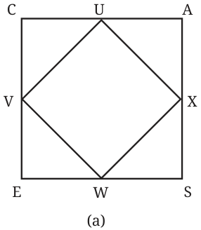</figure>
<figure class="fig side-fig">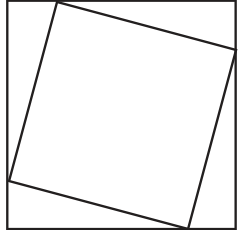</figure>
<p>Ans. In (a) Given CASE is a square. Let side of square be x .</p>
<p>Then half of side \(= \frac{x}{2}\) In right \(\triangle CUV\), \(UV^{2}= CU^{2}+ CV^{2} = \frac{x}{4} + \frac{x}{4} = \frac{x}{2}\)</p>
<figure class="fig side-fig">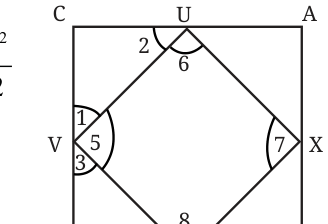</figure>
<div class="mathblock"><p>So \(UV = \frac{1}{2} x\) Similarly, \(UX = XW = VW = \frac{1}{2}\)</p></div>
<p>Now, In \(\triangle CUV\), \(\angle C = 90 ^{\circ}\) and \(CU = CV\)</p>
<div class="mathblock"><p>So, \(\angle 1 = \angle 2 = 45 ^{\circ}\) or \(\angle 3 = \angle 4 = 45 ^{\circ}\)</p></div>
<p>So, \(\angle 1 + \angle 3 + \angle 5 = 180 ^{\circ}\) (Linear Pair)</p>
<div class="mathblock"><p>\(\angle 5 = 90 ^{\circ}\) Similarly, \(\angle 6 = \angle 7 = \angle 8 = 90 ^{\circ}\)</p></div>
<p>In quadrilateral UXWV, all sides and angles are equal \((90 ^{\circ}\) ) so UXWN is square.</p>
<ul class="qlist">
<li><span class="mk">8.</span><span class="lt">If a quadrilateral has four equal sides and one angle of \(90 ^{\circ}\) , will it be</span></li>
</ul>
<p>a square? Find the answer using geometric reasoning as well as by construction and measurement. Ans. Yes it will be a square.</p>
<p>A quadrilateral with four equal sides is a rhombus. In a rhombus opposite angles are equal and adjacent angles are supplementary . One angle is \(90 ^{\circ}\) then adjacent angle and opposite angle will be \(90 ^{\circ}\) .</p>
<p>All four angles are equal to 90 . So it is a square.</p>
<ul class="qlist">
<li><span class="mk">9.</span><span class="lt">What type of a quadrilateral is one in which the opposite sides are</span></li>
</ul>
<p>equal? Justify your answer. Hint: Draw a diagonal and check for congruent triangles.</p>
<p>Ans. This quadrilateral is a parallelogram. In \(\triangle ABC\) and \(\triangle ACD\), \(AB = CD\), \(BC = AD\) and \(AC = AC\). So, by SSS congruence \(\triangle ABC \cong \triangle CDA\) Therefore \(\angle 1 = \angle 4\) and \(\angle 2 = \angle 3\)</p>
<figure class="fig">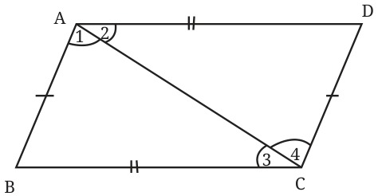</figure>
<p>\(\angle 1\) and \(\angle 4\) are the alternate angles of AB and CD. So AB║CD And \(\angle 3\) and \(\angle 2\) are the alternate angles of BC &amp; AD So BC║AD. Thus both the pairs of opposite sides are parallel. Hence ABCD is a parallelogram.</p>
<ul class="qlist">
<li><span class="mk">10.</span><span class="lt">Will the sum of the angles in a quadrilateral such as the following</span></li>
</ul>
<p>one also be \(360 ^{\circ}\) ? Find the answer using geometric reasoning as well as by constructing this figure and measuring.</p>
<figure class="fig">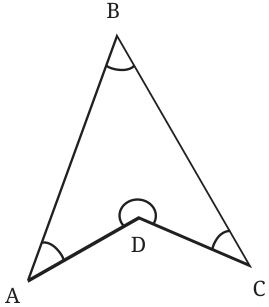</figure>
<figure class="fig side-fig">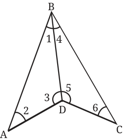</figure>
<p>Ans. Yes, the sum of angles in a quadrilateral ADCB is \(360 ^{\circ}\) . Join BD, Now Sum of angles of \(\triangle ADB = 180 ^{\circ}\) And sum of angles of \(\triangle BDC = 180 ^{\circ}\) Adding both sums of angles of quadrilateral \(= 360 ^{\circ}\)</p>
<ul class="qlist">
<li><span class="mk">11.</span><span class="lt">State whether the following statements are true or false. Justify</span></li>
</ul>
<p>your answers.</p>
<ul class="qlist">
<li><span class="mk">(i)</span><span class="lt">A quadrilateral whose diagonals are equal and bisect each</span></li>
</ul>
<p>other must be a square.</p>
<ul class="qlist">
<li><span class="mk">(ii)</span><span class="lt">A quadrilateral having three right angles must be a rectangle.</span></li>
<li><span class="mk">(iii)</span><span class="lt">A quadrilateral whose diagonals bisect each other must be a</span></li>
</ul>
<p>parallelogram.</p>
<ul class="qlist">
<li><span class="mk">(iv)</span><span class="lt">A quadrilateral whose diagonals are perpendicular to each</span></li>
</ul>
<p>other must be a rhombus.</p>
<ul class="qlist">
<li><span class="mk">(v)</span><span class="lt">A quadrilateral in which the opposite angles are equal must</span></li>
</ul>
<p>be a parallelogram.</p>
<ul class="qlist">
<li><span class="mk">(vi)</span><span class="lt">A quadrilateral in which all the angles are equal is a rectangle.</span></li>
<li><span class="mk">(vii)</span><span class="lt">Isosceles trapeziums are parallelograms.</span></li>
</ul>
<p>Ans.</p>
<ul class="qlist">
<li><span class="mk">(i)</span><span class="lt">False. In a square the diagonals are also perpendicular to each</span></li>
</ul>
<p>other.</p>
<ul class="qlist">
<li><span class="mk">(ii)</span><span class="lt">True. The fourth angle will also be equal to \(90 ^{\circ}\) , because sum</span></li>
</ul>
<p>of all angles is equal to \(360 ^{\circ}\) .</p>
<ul class="qlist">
<li><span class="mk">(iii)</span><span class="lt">True</span></li>
<li><span class="mk">(iv)</span><span class="lt">False. It may be a Kite also.</span></li>
<li><span class="mk">(v)</span><span class="lt">True.</span></li>
<li><span class="mk">(vi)</span><span class="lt">True.</span></li>
<li><span class="mk">(vii)</span><span class="lt">False. The other pair of opposite sides may not be parallel.</span></li>
</ul>
</article>
<nav class="pager"><a class="" data-nav="prev" href="../../04-quadrilaterals/19-figure-it-out/index.html"><span class="dir">← Previous</span><span class="t">Figure it Out</span><span class="ch">Quadrilaterals</span></a><a class="nx" data-nav="next" href="../../05-number-play/01-is-this-a-multiple-of-5.1/index.html"><span class="dir">Next →</span><span class="t">5.1 Is This a Multiple Of?; Sum of Consecutive Numbers</span><span class="ch">Number Play</span></a></nav>
</main><footer class="site">Generated from the source textbook PDFs · text, figures and exercises belong to their respective publishers.</footer><script defer src="https://cdn.jsdelivr.net/npm/katex@0.16.11/dist/katex.min.js" crossorigin="anonymous"></script>
<script defer src="https://cdn.jsdelivr.net/npm/katex@0.16.11/dist/contrib/auto-render.min.js" crossorigin="anonymous"
  onload="renderMathInElement(document.body,{delimiters:[
    {left:'\\(',right:'\\)',display:false},
    {left:'$$',right:'$$',display:true},
    {left:'\\[',right:'\\]',display:true}],throwOnError:false,ignoredTags:['script','noscript','style','textarea','pre','code']})"></script>
<script src="../../../assets/book.js"></script>
<script defer src="../../../../assets/search.js"></script>
</body>
</html>
